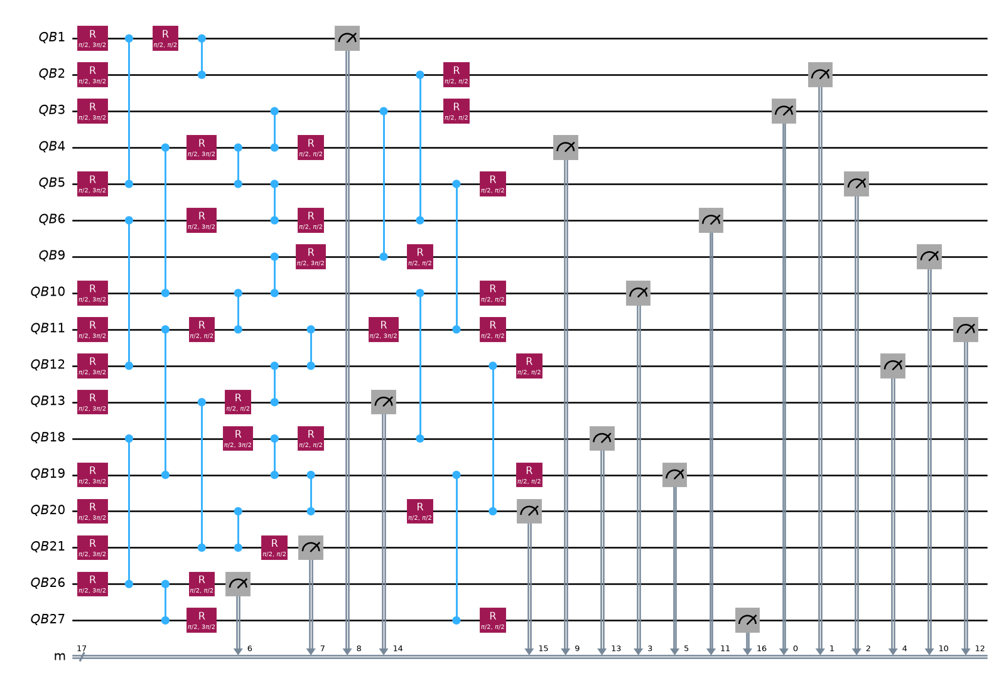

Hardware LER / round
—Fitted from available runsRESEARCH OVERVIEW
Logical memory performance
Compare experiments and inspect the measured logical error rate.
Simulation LER / round
—Stim baselineCode distance
—Memory basisShots per round
—Processor01 / PERFORMANCE
Logical error probability
Probability of a decoded logical failure as rounds increase.
Select a point in the chart to inspect a measurement round.
IQM hardwareStim simulationHover points for values
02 / EXPERIMENT
Run details
Hardware and simulation are labeled separately. Circuit illustrations are reference artifacts, not necessarily from this run.
Compare two experiments Optional · expand
EXPERIMENT COMPARISON
Logical failure probability
Select different experiments above. Error bars represent uploaded uncertainty when provided.
FIT AND PERFORMANCE
Comparison summary
A smaller fitted error rate is not proof of an improvement unless circuit conditions are comparable and uncertainties are considered.
Upload logical error results
JSON or CSV: per-round hardware and/or simulation logical error probabilities; optional standard errors and shot counts. Fractions, not percentages. Use the same format for comparisons.
Shots inspected
—Detector count
—Decoded failure probability
—DETECTION EVENTS
Shot heatmap
Upload or choose per-shot detector data to view.
Each bright cell is a fired detector. Rows = shots, columns = detectors.
DIAGNOSTICS
Detector firing rates
Detector rates appear here when event data is available.
Predictions and observed logical flips are needed to calculate decoded failures.
SHOTS
Selected shot
Select a row in the heatmap to inspect its detection pattern.
Upload detector events
Upload detector JSON: required det_events (shots × detectors), optional obs_flips and predicted_flips (shots × logical observables). Raw IQM counts alone cannot be decoded here.
Explicit SWAPs
—Native instruction countExtra CZ gates
—Against required scheduleCZ gates
—PRX gates
—Compilation evidence
Upload compilation audit
JSON generated by the audit script: actual gate counts, explicit SWAPs, expected and observed CZ counts, dependency depth, and topology-check status. Do not upload a raw circuit here. A report is not independent verification.
Download saved Emerald auditReference circuit diagrams Optional · one-round Emerald compilation
Logical circuit

Native circuit

These images are separate reference artifacts, not the selected audit or Garnet memory results.
Drop your result file here
or click to browse · JSON / CSV · maximum 2 MB
No file selected